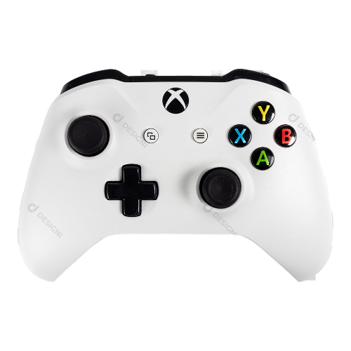
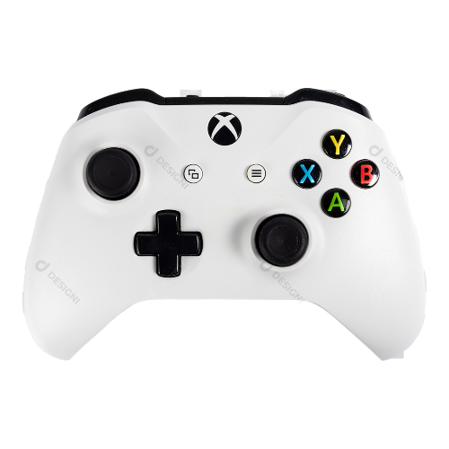

-
Game ranking 2B
2023
Jogos jogados em 2023 pelo 2B:
Call Of Duty: Mobile
Esse jogo possui 2 modos sendo eles:
Battle Royale:
possui um mapa aberto, começo da partida os jogadores estão em um avião para escolher um ponto onde querem pousar, o objetivo ser o último sobrevivente no final da partida.
Multijogador:
o modo consiste em 2 equipes em um mapa reduzido em espaços contendo opções variadas de mapa.Podendo montar seu próprio arsenal.
GTA 5
Sobre:
Uma trama centrada em assaltos ao banco, mas deixa o jogador livre para explorar totalmente Los Santos. Não é aprenas nesse ponto que o game inova, ele permite que cada personagem siga com sua vida enquanto o jogador está no comando de um de seus companheiros.
Hill Climb Racing 2
Sobre:
o jogo é de corrida, e tem vários carros disponiveis para compra e também é preciso ir evoluindo os componentes do carro para que fique mais rápido. O jogo possui vários tipos de pistas e circuitos diferentes e conforme você vai os quais podemos realizar mais upgrades nos carros.